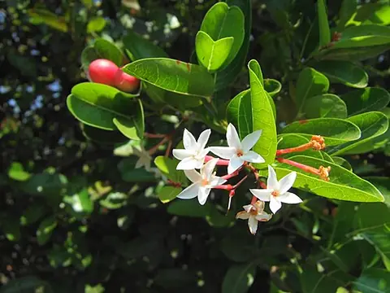

Karonda
Karonda is a wild fruit you can forage from July to September in West coast and Deccan, Central forests, South India, Thar and dry northwest and Northern plains. Thorny hedge shrub with small berries that go from pink to almost black.

When is karonda in season in India?
Karonda is usually in season July to September. Timing shifts with weather, latitude and altitude.
Where does karonda grow in India?
Karonda grows in Andaman and Nicobar Islands, Andhra Pradesh, Bihar, Chandigarh, Chhattisgarh, Dadra and Nagar Haveli and Daman and Diu, Delhi, Goa, Gujarat, Haryana, Jharkhand, Karnataka, Kerala, Lakshadweep, Madhya Pradesh, Maharashtra, Odisha, Puducherry, Punjab, Rajasthan, Tamil Nadu, Telangana, Uttar Pradesh, Uttarakhand. Regions: West coast and Deccan, Central forests, South India, Thar and dry northwest, Northern plains.
How do you recognise karonda?
Thorny hedge shrub with small berries that go from pink to almost black.
How do you harvest karonda?
Pick fruit that comes away easily, or gather freshly fallen fruit. Don't break branches, and leave plenty for birds and animals.
How do you eat karonda?
Pickle, chutney, jam. Ripe dark berries can be eaten fresh.
How do you store karonda?
Pickle in salt and mustard oil.
What can be confused with karonda?
Lantana (Lantana camara), rated toxic. Lantana berries are small, glossy and black, in tight round clusters on a scrambling shrub. Karonda and jamun fruits are larger. Lantana leaves are rough, toothed and strong-smelling, and its flowers come in pink, yellow and orange clusters. Unripe green lantana berries are the most poisonous, especially for children.
What is karonda good for?
Vitamin C, Iron & calcium.
What can you cook with karonda?
- Karonda squash: Boil ripe karondas, strain, then cook the juice with sugar into a syrup. Dilute 1:4 with water to serve.
- Karonda pickle: Halved karondas salted, then tossed in mustard oil with fennel and nigella.
- Karvandachi chutney: Raw karvanda ground with green chilli, jaggery and salt. A Maharashtrian monsoon side.